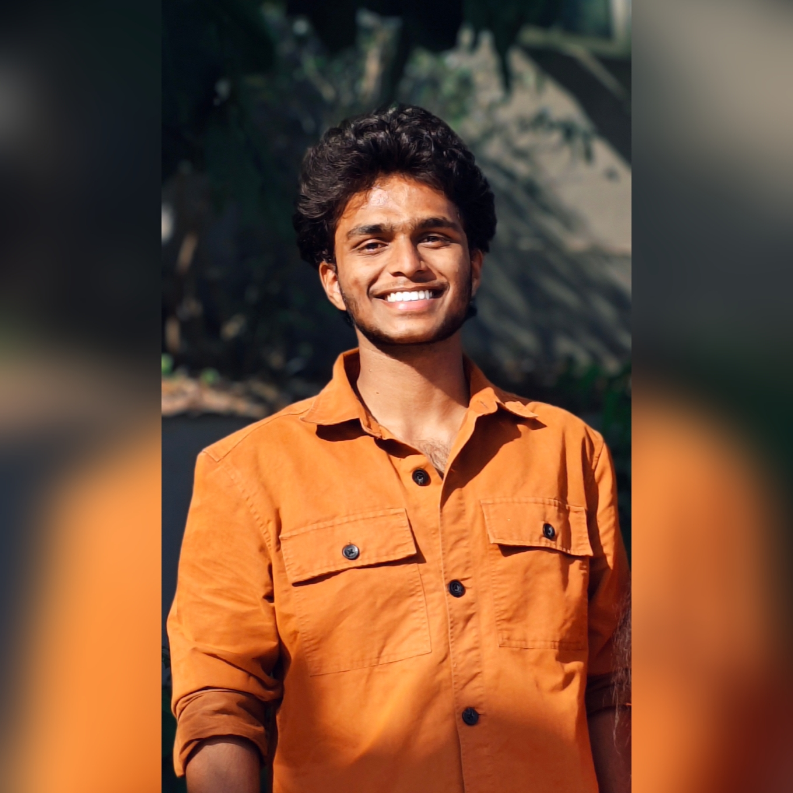

Bachelor’s degree
B.Tech — Computer Science & Engineering
Guru Nanak Institution of Technology
Hyderabad, Telangana
Open to learning & opportunities
Computer Science & Engineering Student
Building my skills in C++, Data Structures & Algorithms, Python and Web Development.
I'm a Computer Science & Engineering student passionate about problem solving, software development and learning how technology can be used to build practical solutions.

01 / About me
I’m currently pursuing a B.Tech in Computer Science & Engineering at Guru Nanak Institution of Technology. I enjoy breaking down complex problems, understanding how things work, and turning what I learn into useful software.
My current focus is building a strong foundation in problem solving, web development and software engineering. I’m looking forward to contributing to real teams, learning from experienced developers and growing into a thoughtful software engineer.
02 / Education
Bachelor’s degree
Guru Nanak Institution of Technology
Hyderabad, Telangana
Intermediate
Higher secondary education
Percentage:94%School
Secondary education
CGPA: 8.5003 / Skills
A toolkit in progress, shaped by coursework, practice and the projects I’m working towards.
04 / Currently building
Projects I’m working towards building and documenting. These are honest beginnings, designed to grow with my skills.
A web-based platform designed to improve communication between students, faculty and event organizers and make college events easier to discover.
+ Completed projects, live demos and write-ups will appear here as they’re ready.
05 / Learning roadmap
Improving problem-solving skills through Data Structures & Algorithms and competitive programming practice.
Building practical web applications and strengthening frontend/backend development skills.
Next chapter
Currently seeking software engineering internships and opportunities to gain real-world development experience.
View resume ↓06 / Beyond code
07 / Contact
Have an opportunity, a project idea or just want to say hello? My inbox is open.